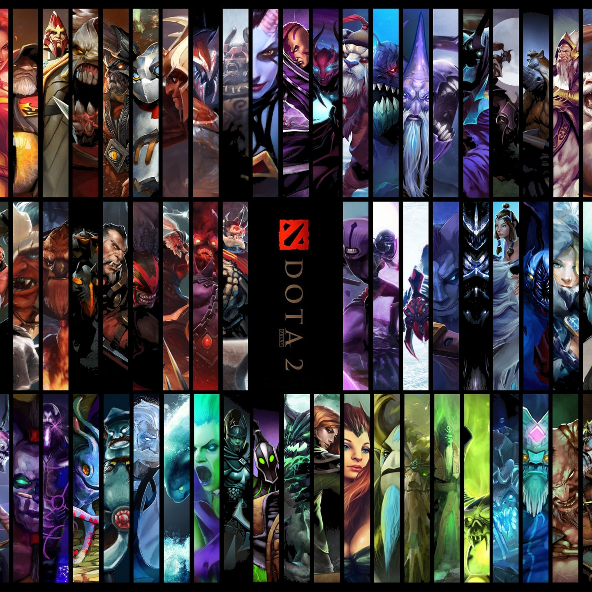

Об игре

Dota начинала свой путь в качестве пользовательской модификации для Warcraft 3 и превратилась в одну из самых популярных онлайн-игр в мире. Следуя традиции Counter-Strike, Day of Defeat, Team Fortress, Portal и Alien Swarm, Dota 2 появилась в результате найма Valve разработчиков из сообщества, создавших модификацию игры, и предоставления им возможности вместе с профессиональной командой разработчиков и художников из Valve превратить свои идеи в полноценную игру.
Описать геймплей этой игры — не самая легкая задача. Игровая камера предоставляет игроку вид с привычной для стратегий в реальном времени перспективы, однако будет неправильно причислять Dota к играм этого жанра. И хотя каждый герой начинает свой путь с первого уровня, и многократно достигает порога в 25, столь же неверно будет отнести игру к жанру ролевых игр.
Множество людей пытались причислить Dota к разным жанрам, однако, на наш взгляд, самым ёмким определением будет экшен-стратегия в реальном времени. Мы не тратим много времени на определение жанра, изобретенного игрой, оно уходит на то, чтобы играть в нее самим!
В игре участвуют две команды по пять человек. Одна группа играет за светлых героев, а другая — за темных, при этом каждый пользователь управляет только одним персонажем. За матч он получает опыт, зарабатывает золото, открывает новые умения и покупает полезные предметы. Все ресурсы зарабатываются при уничтожении нейтральных и вражеских монстров, а также игроков из команды противника. Главная задача — уничтожение главного здания базы оппонента.
Dota 2 отличается от предшественника рядом изменений. В игру была добавлена поддержка переподключения, возможность поставить паузу и присоединиться к любой незакрытой игре в качестве зрителя, встроенный голосовой чат и просмотр информации о нанесенном уроне убитому игроку. Появилось разделение игроков по географическим зонам (сейчас их всего четырнадцать: западная и восточная Европа, восток и запад США, Южная Америка, Россия, Индия, Южная Корея, Юго-Восточная Азия, Австралия, Чили, Перу, Дубай и Южная Африка). Впрочем, настроить территорию можно вручную.
Главной особенностью Dota 2 можно считать обилие игровых персонажей, число которых переваливает за сотню. Все они отличаются не только внешне, но и по стилю игры, поскольку обладают различными характеристиками и способностями. Также каждый герой играет определенные роли в команде во время игры в зависимости от той или иной ситуации. Как и во многих играх от Valve, периодически, после сыгранных матчей есть шанс получить различные предметы, которые можно надевать на своих персонажей.
Главные турниры
- The International 2015
Призовой фонд: 18 429 613 долларов США
- The Manila Major
Призовой фонд: 3 000 000 долларов США
- The Shanghai Major
Призовой фонд: 3 000 000 долларов США
- The Frankfurt Major
Призовой фонд: 3 000 000 долларов США
Лучшие команды
Team OG
- Состав:
Team Liquid
- Состав:

Team Newbee
- Состав:
Лазарев Илья 2016